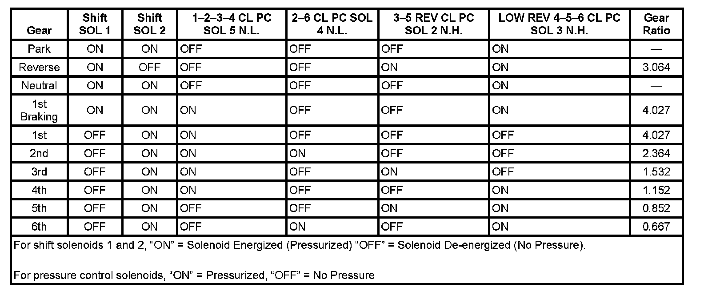

Operation CHARM
: Car repair manuals for everyone.
Home
>>
Cadillac
>>
2007
>>
Escalade ESV AWD V8-6.2L
>>
Repair and Diagnosis
>>
Transmission and Drivetrain
>>
Actuators and Solenoids - Transmission and Drivetrain
>>
Actuators and Solenoids - A/T
>>
Shift Solenoid
>>
Specifications
>>
6L50/6L80/6L90 - Automatic Transmission
6L50/6L80/6L90 - Automatic Transmission
Shift Solenoid Valve State and Gear Ratio
Shift Solenoid Valve State and Gear Ratio:
